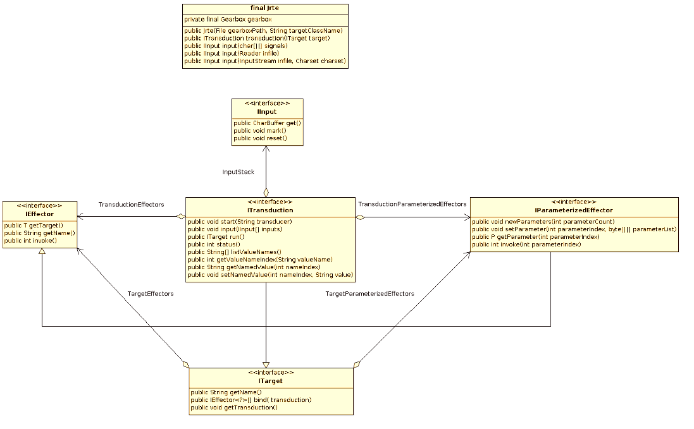

See: Description
| Interface | Description |
|---|---|
| IEffector<T extends ITarget> |
Interface for simple effectors.
|
| IInput |
Interface for input sources that can be included on the input stack of a running
Transduction instance.
|
| INamedValue |
Snapshot wrapper for named values.
|
| IParameterizedEffector<T extends ITarget,P> |
Interface for parameterised effectors.
|
| ITarget |
Interface for transduction target classes, which express IEffector instances
that are invoked from runtime transductions.
|
| ITransduction |
Interface for runtime transductions.
|
| Class | Description |
|---|---|
| Jrte |
This is the Jrte main runtime transduction factory class.
|
| Exception | Description |
|---|---|
| CompilationException |
Thrown by the gearbox compiler when an error is found during gearbox compilation
|
| DomainErrorException |
Thrown by the runtime engine when no transition is defined for nul signal injected
after receiving an input ordinal not recognized for current state.
|
| EffectorException |
Thrown by the runtime engine when an effector throws an exception
|
| GearboxException |
Thrown when there is a problem relating to the gearbox
|
| InputException |
Thrown when there is a problem with the input
|
| MarkLimitExceededException |
Thrown when the amount of marked data in an marked input exceeds the maximum
|
| RteException |
Base class for runtime exceptions
|
| TargetBindingException |
Thrown when there is a problem binding target effectors to a transduction
|
| TargetNotFoundException |
Thrown when the target class cannot be instantitated using a default constructor
|
| TransducerNotFoundException |
Thrown when a named transducer cannot be found in the gearbox
|

Client applications use the Jrte.Jrte(File, String)
constructor to load a Gearbox compiled from ginr automata. The Gearbox instantiates
a proxy instance of an ITarget implementation
class to verify that the target class and its effectors match the target class
referenced during gearbox compilation. Applications can then use the
Jrte.transduction(ITarget)
method to instantiate an ITransduction.
A transduction binds a stack of IInput, a transducer
stack, and an ITarget instance. The starting transducer reads input ordinals, which
may be Unicode character ordinals or signal ordinals, from the IInput on
the top of the input stack, popping the input stack as each IInput is
exhausted. Each input drives a transition in the transducer at the top
of the transducer stack, which determines a (possibly empty) vector of
target effectors to invoke.
The com.characterforming.jrte.base package provides three IInput
implementations. The Jrte.input(char[][])
method receives an array of char[] arrays, each containing either a signal name
or a text sequence. It maps signal names to corresponding signal ordinals and
copies text ordinals from text sequences to produce a single char[] array as
the input source. The Jrte.input(Reader)
method receives a Reader as the input source, and
Jrte.input(InputStream, Charset) receives a
raw input stream and decodes it to text using a specified Charset.
For example, it is sometimes useful to provide an initial nil signal to a transduction to provide a starting transition that sets up the transduction:
Jrte jrte = new Jrte(new File(".\jrte.gears", "com.characterforming.jrte.base.BaseTarget");
IInput[] inputs = new IInput[] {
jrte.input(new char[][] { new String("!nil").toCharArray() }),
jrte.input(new InputStreamReader(System.in))
};
In the code example above, the Jrte BaseTarget class is selected as the target.
The overview documentation describes
the built-in effectors expressed by the base transduction target class, which are
sufficient for simple transductions that write to System.out. The built-in
effectors are available to all target classes, even if they do not explicitly
subclass BaseTarget, along with any additional effectors defined by specialized
target classes.
To continue the example above:
ITarget target = new BaseTarget();
ITransduction transduction = jrte.bind(target);
transduction.start("HelloWorld");
transduction.input(inputs);
while (transduction.status() == ITransduction.RUNNABLE) {
transduction.run();
}
If System.in contains "hello world" this transduction will write "(-: hello world :-)"
to System.out. The transducer HelloWorld is a 3-tape finite state automaton, where
the 1st tape matches the input, the 2nd tape specifies the target effectors
to invoke on input transitions, and the 3rd tape holds parameter values for
parameterised effectors. It is compiled from a regular expression by ginr and
saved to a .dfa file for input to the Jrte gearbox compiler.
HelloWorld = (
(nil, clear paste[`(-: `]) ('hello world' @@ PasteAny) (eos, paste[` :-)`] out outln clear)
);
HelloWorld :save `_HelloWorld.dfa`;
In the ginr expression above, the PasteAny transducer acts as a general-purpose method to append input into the current selection. When it is applied to a specific input pattern using ginr's join operator --
PasteAny @@ 'hello world'-- its domain is restricted to the input pattern, so the application in HelloWorld is equivalent to:
(h,paste)(e,paste)(l,paste)...(r,paste)(l,paste)(d,paste)
A synopsis of the operators provided by ginr can be viewed here.
Copyright (c) 2011,2017,2019 Kim T Briggs, Fredericton, NB